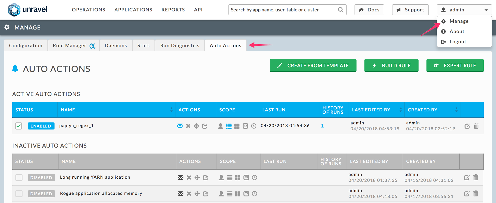
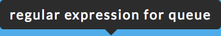
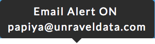
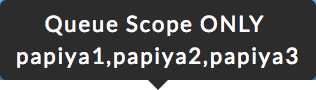
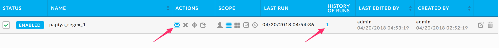
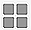
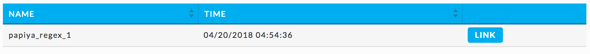
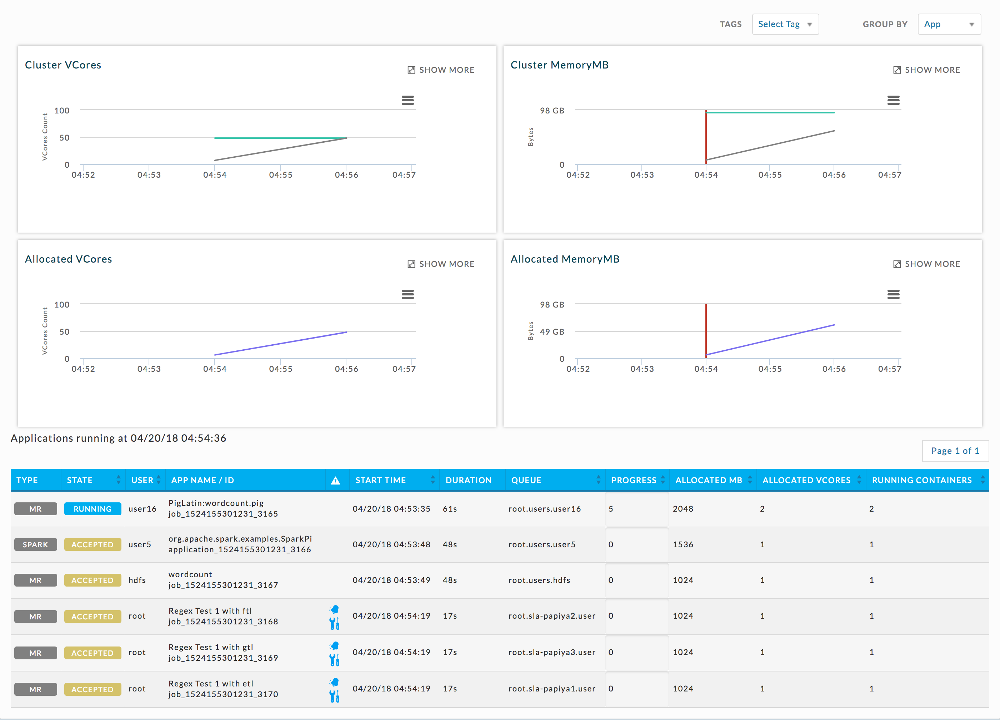

Auto Actions
Auto Actions Overview
Table of Contents
Unravel's Auto Actions automates the monitoring of your compute cluster by allowing you to define complex actionable rules on different cluster metrics. You can use an auto action to alert you to a situation needing manual intervention, e.g., resource contention or stuck jobs. Additionally, it can be set to automatically kill an application or move it to a different queue.
The Unravel Server processes auto actions by:
Collecting various metrics from the cluster(s),
Aggregating the collected metrics according to user-defined rules,
Detecting rule violations, and
Applying defined actions for each rule violation.
Each rule consists of:
A logical expression that is used to aggregate cluster metrics and to evaluate the rule. A rule has two conditions:
Prerequisite conditions: The conditions which cause a violation, e.g., the number of jobs running, memory used.
Defining conditions: Who/what/when can cause the violation, e.g., user, applications
Actions for Unravel Server to execute whenever it detects a rule violation.
Viewing Auto Actions
Select Manage | Auto Actions.
The Auto Actions tab provides a quick way to view auto
actions and quickly see their status, along with its defined
actions and scope. The tab displays all defined auto actions
separated into an Active and Inactive list. You
enable/disable by clicking the check box on the left. You can edit
() or delete ( ) an auto action regardless of its
status. At the top of the view are buttons which allow
you to define new auto
actions.
) an auto action regardless of its
status. At the top of the view are buttons which allow
you to define new auto
actions.
|  |
Hovering over the auto action's name gives you the description which was entered when defining the auto action. Hovering over action or scope glyph brings up its detail. For example, for the active auto action above:
rule description:
 ,
email action: an email is sent to only 1 person,
 , and
queue scope: is three queues:
 .
The Actions and Scope columns contains all available options. When an option has been set, i.e., no longer using the default setting, it is highlighted.It is possible to set an auto action which contains no actions, see quicktest below. Such an auto action simply has when it was triggered logs and retains the data. Every auto action must have a scope. When the auto action has an action or scope defined via an Expert Rule, that action or scope is not noted in the table. The auto action, quicktest inMRbelow, does not note a scope;however one was specified via an Expert Rule. The The History of Runs column lists the number of times, if any, the auto action was triggered. Click on the number to bring up it's history.
|  |
By default all actions are off. Possible actions are:
Send an Email (
)
Kill the App (
)
Move the app to another queue (
), and
Send a Http post (
)
By default the various scopes apply to all, i.e., all applications and constantly on. The scopes are:
User (
)
Queue (
),
Cluster (
 ),
Application (
),
Time (
),
Sustained Violation: This is not shown in the auto actions list.
If you have not defined a particular action or scope, i.e., it's using the default, the glyph is grey (). When it is defined the glyph is blue in an active auto action (), and darkened when auto action is disabled ().
The history of runs contains an entry for each time the auto action was triggered. Click on the run's Link to bring up the Cluster View (Reports | Resources) for that particular run.
|  |
The Cluster View shows a time slice, ±5 minutes from when the
auto action was triggered and lists all the applications running
during that period. This application table is similar to the
application table shown under. This application table is similar
to the application table shown under Applications |
Applications. Not all the applications will have triggered an
auto action during this time slice. Click on a graph to show the
applications running at that point in time. The
Notifications column ( ) notes if the application triggered the auto
action (), has tuning suggestions (), or both ().
) notes if the application triggered the auto
action (), has tuning suggestions (), or both ().
|  |
'Snoozing' Auto Actions
The snooze function prevents automatic actions from being repeated during a specified period of time, if and only if,
it is the same violation context and the action adds no further information to the violation, i.e., the new violation is essentially noise.
See Snooze Feature for more information on snooze and an example of how it works.
|
Property |
Definition |
Possible Value |
Default |
|---|---|---|---|
|
|
The time repeated violations are be ignored for the violator, i.e., app, user. If the violation is still occurring when awakened the Auto Action executes the action(s) and the violator is once again snoozed. An auto action containing a kill or move app action is never snoozed. Value is in seconds. |
0: snooze is turned off. > 0: snooze is on, there is no no upper bound. |
1 hour (3,600 seconds) |
Note
When you change the snooze time period all applications currently snoozed are reset. Upon next violation the application is "snoozed" using new snooze value.
To change the snooze time
On Unravel Server, open
/usr/local/unravel/etc/unravel.propertieswithvi.# sudo vi /usr/local/unravel/etc/unravel.properties
Search for
com.unraveldata.auto.action.snooze.period.sec.Set the property to the new value (using seconds) and save the file. In the example below, snooze is set to 2 hours.com.unraveldata.auto.action.snooze.period.sec=7200
Restart the JCS2 daemon.
# service unravel_jcs2 restart